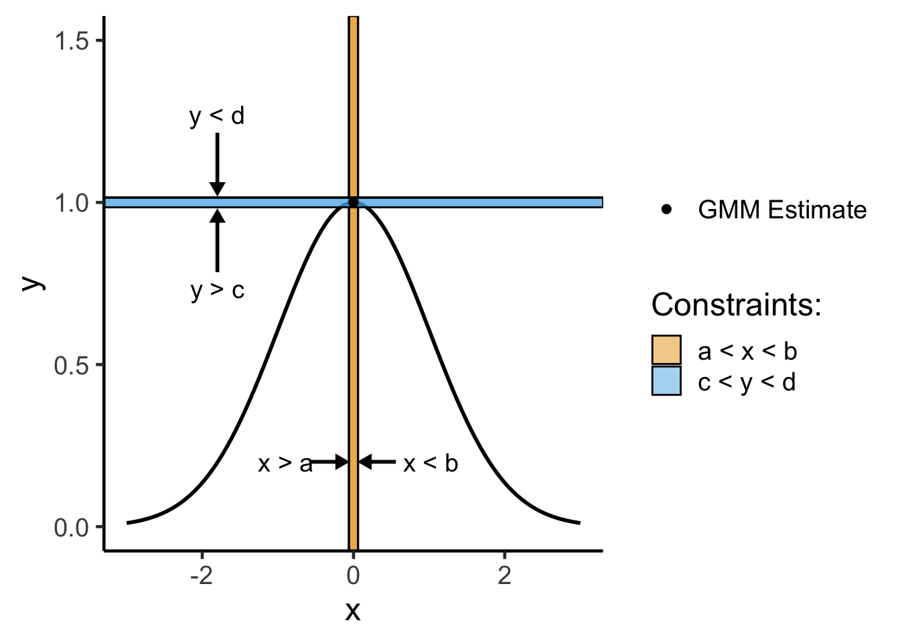

Code
source("../../dsan-globals/_globals.r")A ‘Bridge’ to DSAN 5300 (Statistical Learning)
source("../../dsan-globals/_globals.r")\[ \DeclareMathOperator*{\argmax}{argmax} \DeclareMathOperator*{\argmin}{argmin} \newcommand{\bigexp}[1]{\exp\mkern-4mu\left[ #1 \right]} \newcommand{\bigexpect}[1]{\mathbb{E}\mkern-4mu \left[ #1 \right]} \newcommand{\definedas}{\overset{\small\text{def}}{=}} \newcommand{\definedalign}{\overset{\phantom{\text{defn}}}{=}} \newcommand{\eqeventual}{\overset{\text{eventually}}{=}} \newcommand{\Err}{\text{Err}} \newcommand{\expect}[1]{\mathbb{E}[#1]} \newcommand{\expectsq}[1]{\mathbb{E}^2[#1]} \newcommand{\fw}[1]{\texttt{#1}} \newcommand{\given}{\mid} \newcommand{\green}[1]{\color{green}{#1}} \newcommand{\heads}{\outcome{heads}} \newcommand{\iid}{\overset{\text{\small{iid}}}{\sim}} \newcommand{\lik}{\mathcal{L}} \newcommand{\loglik}{\ell} \DeclareMathOperator*{\maximize}{maximize} \DeclareMathOperator*{\minimize}{minimize} \newcommand{\mle}{\textsf{ML}} \newcommand{\nimplies}{\;\not\!\!\!\!\implies} \newcommand{\orange}[1]{\color{orange}{#1}} \newcommand{\outcome}[1]{\textsf{#1}} \newcommand{\param}[1]{{\color{purple} #1}} \newcommand{\pgsamplespace}{\{\green{1},\green{2},\green{3},\purp{4},\purp{5},\purp{6}\}} \newcommand{\prob}[1]{P\left( #1 \right)} \newcommand{\purp}[1]{\color{purple}{#1}} \newcommand{\sign}{\text{Sign}} \newcommand{\spacecap}{\; \cap \;} \newcommand{\spacewedge}{\; \wedge \;} \newcommand{\tails}{\outcome{tails}} \newcommand{\Var}[1]{\text{Var}[#1]} \newcommand{\bigVar}[1]{\text{Var}\mkern-4mu \left[ #1 \right]} \]
As we entered the unit on Parameter Estimation, encompassing both Maximum Likelihood Estimation (MLE) and Generalized Method of Moments (GMM) Estimation, a bunch of students helpfully pointed out how the mathematical content of the course suddenly kind of “shifted into high gear”.
So, although it won’t help in terms of the Quizzes and Labs you’ve already completed on these topics, I think it is helpful to return to the mathematical aspects of those units, since they will become fairly central to the problems you’ll encounter in DSAN 5300: Statistical Learning, in the Spring semester.
My goals here are:
The second bullet point is why I also mentioned GMM Estimation above: it turns out that, whereas MLE is an optimization problem without constraints, GMM can essentially be written as an optimization problem with only constraints.
As a preview of what this means, first assume we have:
You can compare MLE for this scenario, written in the form of an optimization problem:
\[ \begin{alignat}{2} \boldsymbol\theta^* = &&\max_{\param{\boldsymbol\theta}} \quad &\mathcal{L}(\mathfrak{X} = \mathbf{x} \mid \param{\boldsymbol\theta}) \\ && \text{s.t.} \quad &\varnothing \end{alignat} \]
with GMM estimation for this scenario written in the same form:
\[ \begin{alignat}{2} \boldsymbol\theta^* = &&\max_{\param{\boldsymbol\theta}} \quad &\varnothing \\ && \text{s.t.} \quad & \mu_1(\param{\boldsymbol\theta}) = \widehat{\mu}_1(\mathbf{x}, \param{\boldsymbol\theta}) \\ && \quad & \mu_2(\param{\boldsymbol\theta}) = \widehat{\mu}_2(\mathbf{x}, \param{\boldsymbol\theta}) \\ && \quad & \phantom{\mu_1(\param{\boldsymbol\theta})} ~ \vdots \\ && \quad & \mu_J(\param{\boldsymbol\theta}) = \widehat{\mu}_J(\mathbf{x}, \param{\boldsymbol\theta}), \end{alignat} \]
where:
In both cases, the symbol \(\varnothing\) literally just means “nothing”: in the MLE case, we have no constraints, whereas in the GMM estimation case, we have no objective function.
For readability, \(\text{s.t.}\) is just shorthand for “subject to”, or sometimes “such that”. This means that the full expression in general can be read like “\(\param{\boldsymbol\theta}^*\) is the maximum of ____, subject to _____”
The unconstrained optimizations we will carry out here can be visualized as “hill climbing”: the optimization approach you probably learned in calculus class—computing the derivative and setting it equal to zero—works precisely because the top of the “hill” is the point at which the derivative becomes zero. For example, if we started climbing from the left side of the following plot, the derivative would get lower and lower as we moved right, hitting zero when we reach the top of the “hill”:
library(tidyverse) |> suppressPackageStartupMessages()
my_hill <- function(x) exp(-(1/2)*x^2)
my_slope <- function(x) -x*exp(-(1/2)*x^2)
x0_vals <- c(-1.75, -0.333, 0)
tangent_at_x0 <- function(x,x0) my_slope(x0)*(x - x0) + my_hill(x0)
tan_x1 <- function(x) tangent_at_x0(x, x0_vals[1])
tan_x2 <- function(x) tangent_at_x0(x, x0_vals[2])
tan_x3 <- function(x) tangent_at_x0(x, x0_vals[3])
eval_df <- tibble(x=x0_vals) |> mutate(y=my_hill(x))
tan_ext <- 0.5
slopes <- round(c(
my_slope(x0_vals[1]),
my_slope(x0_vals[2]),
my_slope(x0_vals[3])
), 3)
opt_df <- tibble(x=0, y=my_hill(0))
x_df <- tibble(x=c(-3, 3))
x_df |> ggplot(aes(x=x)) +
stat_function(fun=my_hill, linewidth=1) +
geom_function(
fun=tan_x1, aes(color="x1"), linewidth=1,
xlim=c(
x0_vals[1]-tan_ext,
x0_vals[1]+tan_ext
)
) +
geom_function(
fun=tan_x2, aes(color="x2"), linewidth=1,
xlim=c(
x0_vals[2]-tan_ext,
x0_vals[2]+tan_ext
)
) +
geom_function(
fun=tan_x3, aes(color="x3"), linewidth=1,
xlim=c(
-1,1
)
) +
geom_point(
data=eval_df,
aes(x=x, y=y, color=c("x1","x2","x3")),
size=2
) +
geom_point(
data=opt_df,
aes(x=x, y=y, shape="mle"),
size=2
) +
scale_shape_manual(
element_blank(),
values=19,
labels="MLE Estimate"
) +
scale_color_manual(
"Slope at x",
values=c(cb_palette[1], cb_palette[2], cb_palette[3]),
labels=slopes
) +
theme_classic(base_size=18) +
ylim(c(0, 1.15))
Using this same metaphor of the top of a hill being the “best” point, constrained optimization is a bit harder to visualize, but you can think of it like:
where that coming-closer-together is set up so as to crunch the space, making it smaller and smaller until the only point(s) left are the point(s) representing the optimal solution:
xl <- -0.06
xu <- 0.06
yl <- 0.985
yu <- 1.015
anno_x <- -1.8
anno_y <- 0.2
x_df <- tibble(x=c(-3, 3))
rib_df <- x_df |> mutate(
ymin = -0.1,
ymax = 0.1
)
x_df |> ggplot(aes(x=x)) +
stat_function(fun=my_hill, linewidth=1) +
geom_rect(
aes(fill="x"), xmin=xl, xmax=xu, ymin=-Inf, ymax=Inf, alpha=0.5, color='black'
) +
geom_segment(x=xl, xend=xl, y=-Inf, yend=Inf) +
geom_segment(x=xu, xend=xu, y=-Inf, yend=Inf) +
geom_rect(
aes(fill="y"), xmin=-Inf, xmax=Inf, ymin=yl, ymax=yu, alpha=0.5, color='black'
) +
geom_segment(x=-Inf, xend=Inf, y=yl, yend=yl) +
geom_segment(x=-Inf, xend=Inf, y=yu, yend=yu) +
# Anno xmin
annotate(
"segment", y=anno_y, yend=anno_y, x = xl-0.5, xend = xl-0.04,
linewidth=1, linejoin = "mitre",
arrow = arrow(type = "closed", length = unit(0.02, "npc"))
) +
annotate(
"text", y=anno_y, x=xl-1.2, label = "x > a", color = "black",
angle = 0, hjust = 0, vjust=0.5, size = 5
) +
# Anno xmax
annotate(
"segment", y=anno_y, yend=anno_y, x = xu+0.5, xend = xu+0.04,
linewidth=1, linejoin = "mitre",
arrow = arrow(type = "closed", length = unit(0.02, "npc"))
) +
annotate(
"text", y=anno_y, x=xu+0.6, label = "x < b", color = "black",
angle = 0, hjust = 0, vjust=0.5, size = 5
) +
# Anno ymin
annotate(
"segment", x=anno_x, xend=anno_x, y = yl-0.2, yend = yl-0.015,
linewidth=1, linejoin = "mitre",
arrow = arrow(type = "closed", length = unit(0.02, "npc"))
) +
annotate(
"text", x=anno_x, y=yl-0.25, label = "y > c", color = "black",
angle = 0, hjust = 0.5, vjust=0.5, size = 5
) +
# Anno ymax
annotate(
"segment", x=anno_x, xend=anno_x, y = yu+0.2, yend = yu+0.015,
linewidth=1, linejoin = "mitre",
arrow = arrow(type = "closed", length = unit(0.02, "npc"))
) +
annotate(
"text", x=anno_x, y=yu+0.2, label = "y < d", color = "black",
angle = 0, hjust = 0.5, vjust=-0.5, size = 5
) +
scale_fill_manual(
"Constraints:",
values=c(cb_palette[1], cb_palette[2]),
labels=c("a < x < b", "c < y < d")
) +
geom_point(
data=opt_df,
aes(x=x, y=y, shape="gmm"),
size=2
) +
scale_shape_manual(
element_blank(),
values=19,
labels="GMM Estimate"
) +
theme_classic(base_size=18) +
ylim(c(0, 1.5))
Let’s look at how we can work through both MLE and GMM estimation (which we previously learned separately!) as optimization problems, and how that will give us a unified optimization framework for estimating parameters in the fancier ML models you’ll see in DSAN 5300!
As the name implies, Maximum likelihood estimation involves maximizing something:
This is the reasoning behind something I might have mentioned in class in earlier weeks, that “the objective function in MLE is the likelihood function”.
In other words, when you see the term “objective function”, just replace it in your brain with “thing I’m trying to optimize (minimize or maximize) here”.1
Before we look at MLE specifically, therefore, let’s look at a general unconstrained optimization problem, something you almost surely have already solved tons of times (even if you didn’t have the vocabulary of optimization, objective functions, constraints, and so on):
Find \(x^*\), the solution to
\[ \begin{align} \min_{x} ~ & f(x) = 3x^2 - x \\ \text{s.t. } ~ & \varnothing \end{align} \]
From calculus, we know that finding the optimum value for a function like this (whether minimum or maximum) boils down to:
Here, without any constraints, we can follow this exact procedure to find the minimum value. We start by computing the derivative:
\[ f'(x) = \frac{\partial}{\partial x}f(x) = \frac{\partial}{\partial x}\left[3x^2 - x\right] = 6x - 1, \]
then solve for \(x^*\) as the value(s) satisfying \(\frac{\partial}{\partial x}f'(x^*) = 0\) for the just-derived \(f'(x)\):
\[ f'(x^*) = 0 \iff 6x^* - 1 = 0 \iff x^* = \frac{1}{6}. \]
(These green boxes are where I get to pop off a tiny bit, but in a way that I hope is helpful! 😜)
Personally, I absolutely hate, despise memorizing things. So much of school growing up felt like memorizing a ton of things for no reason, since they were things we could just Google 90% of the time…
So, even though people usually associate math with memorization of formulas, for whatever reason I have the opposite association: math was the one class where I didn’t have to memorize things, because (unlike… “the mitochondria is the powerhouse of the cell”) I had really good teachers who always walked us through how to derive things from more basic principles.
So, I’m providing this here as a small set of “shortcuts”, but long story short each of these can be derived from even simpler procedures (I don’t want to clutter this writeup even more by writing those out, but I’m happy to walk you through how you could derive these, in office hours for example!)
| Type of Thing | Thing | Change in Thing when \(x\) Changes by Tiny Amount |
|---|---|---|
| Polynomial | \(f(x) = x^n\) | \(f'(x) = \frac{\partial}{\partial x}f(x) = nx^{n-1}\) |
| Fraction | \(f(x) = \frac{1}{x}\) | Use Polynomial rule (since \(\frac{1}{x} = x^{-1}\)) to get \(f'(x) = -\frac{1}{x^2}\) |
| Logarithm | \(f(x) = \ln(x)\) | \(f'(x) = \frac{\partial}{\partial x} = \frac{1}{x}\) |
| Exponential | \(f(x) = e^x\) | \(f'(x) = \frac{\partial}{\partial x}e^x = e^x\) (🧐❗️) |
| Multiplication | \(f(x) = g(x)h(x)\) | \(f'(x) = g'(x)h(x) + g(x)h'(x)\) |
| Division | \(f(x) = \frac{g(x)}{h(x)}\) | Too hard to memorize… turn it into Multiplication, as \(f(x) = g(x)(h(x))^{-1}\) |
| Composition (Chain Rule) | \(f(x) = g(h(x))\) | \(f'(x) = g'(h(x))h'(x)\) |
| Fancy Logarithm | \(f(x) = \ln(g(x))\) | \(f'(x) = \frac{g'(x)}{g(x)}\) by Chain Rule |
| Fancy Exponential | \(f(x) = e^{g(x)}\) | \(f'(x) = g'(x)e^{g(x)}\) by Chain Rule |
The reason why derivatives are so important for optimization is that we’re trying to climb a hill (for maximization; if we’re minimizing then we’re trying to reach the bottom of a lake)
Now that we have this general procedure for non-constrained optimization in general, let’s use it to obtain a maximum likelihood estimate for some probabilistic model.
We’ll start with an example more similar to the ones you did in DSAN 5100: estimating the rate parameter \(\param{\lambda}\) for a random variable \(X\) with a Poisson distribution.
Given a dataset consisting of \(N\) i.i.d. realizations \(\mathbf{x} = (x_1, \ldots, x_n)\) of Poisson-distributed random variables
\[ X_1, \ldots, X_n \sim \text{Pois}(\param{\lambda}), \]
find the Maximum Likelihood Estimate for the parameter \(\param{\lambda}\).
Like with other distributions we looked at in class, the way to approach problems like this is to write out the details step-by-step until you have enough information to start deriving the MLE. So, the first piece of information we have is:
Given how the Poisson distribution works, this means that2
\[ \Pr(X = k; \param{\lambda}) = \frac{\param{\lambda}^ke^{-\param{\lambda}}}{k!}, \tag{1}\]
where we can use probability mass \(\Pr(X = k)\) rather than probability density \(f_X(k)\) since the Poisson distribution is a discrete distribution (modeling integer counts rather than continuous values like the normal distribution).
The next piece of information we have, in a Maximum Likelihood setup, is an observed dataset containing \(N\) i.i.d. datapoints,
where each point is assumed to be drawn from this Poisson distribution with parameter \(\param{\lambda}\). This assumption means that we treat each of these observed points \(x_i\) as the realization of a Poisson-distributed Random Variable \(X_i\), so that (by Equation 1 above):
\[ \Pr(X_i = x_i; \param{\lambda}) = \frac{\param{\lambda}^{x_i}e^{-\param{\lambda}}}{x_i!}, \]
Our goal in Maximum Likelihood Estimation is to take this observed dataset and figure out what value of the parameter \(\param{\lambda}\) is most likely to have produced \(\mathbf{x}\).
In other words, we are trying to find the value of \(\param{\lambda}\) which maximizes the joint probability that \(X_1\) is realized as \(x_1\), \(X_2\), is realized as \(x_2\), and so on up to \(X_n\) being realized as \(x_n\), which we call the likelihood \(\mathcal{L}(\mathbf{x}; \param{\lambda})\) of the dataset:
\[ \mathcal{L}(\mathbf{x}; \param{\lambda}) = \Pr(X_1 = x_1, X_2 = x_2, \ldots, X_n = x_n; \param{\lambda}). \]
The key for being able to compute this giant joint probability is the independence assumption: since the values in \(\mathbf{x}\) are assumed to be independent and identically distributed (i.i.d.), by the definition of independence, we can factor this full joint probability into the product of individual-variable probabilities:
\[ \begin{align*} \mathcal{L}(\mathbf{x}; \param{\lambda}) &= \Pr(X_1 = x_1, X_2 = x_2, \ldots, X_n = x_n; \param{\lambda}) \\ &= \Pr(X_1 = x_1; \param{\lambda}) \times \cdots \times \Pr(X_n = x_n; \param{\lambda}) \\ &= \prod_{i=1}^{N}\Pr(X_i = x_i; \param{\lambda}) \end{align*} \]
This factoring into individual terms is the key to solving this problem! Now that we’ve done this, the rest of the problem boils down to a calculus problem. Let’s write out this product (which will look messy at first, but we’ll make it simpler using \(\log()\) below!):
\[ \begin{align*} \mathcal{L}(\mathbf{x}; \param{\lambda}) &= \prod_{i=1}^{N}\Pr(X_i = x_i; \param{\lambda}) \\ &= \prod_{i=1}^{N}\frac{\param{\lambda}^{x_i}e^{-\param{\lambda}}}{x_i!} \end{align*} \]
Because \(\log()\) is a monotonic function, the value of \(x\) which maximizes \(\log(f(x))\) will be the same as the value which maximizes \(f(x)\). So, to make our lives easier since \(\log()\) turns multiplications into additions, we compute the log-likelihood (the log of the likelihood function above), which we denote \(\ell(\mathbf{x}; \param{\lambda})\):
\[ \ell(\mathbf{x}; \param{\lambda}) = \log\left[ \prod_{i=1}^{N}\frac{\param{\lambda}^{x_i}e^{-\param{\lambda}}}{x_i!} \right] \]
I recommend working through this application of \(\log()\) yourself, if you can, then you can click the following button to show the worked-out solution:
\[ \begin{align*} \ell(\mathbf{x}; \param{\lambda}) &= \log\left[ \prod_{i=1}^{N}\frac{\param{\lambda}^{x_i}e^{-\param{\lambda}}}{x_i!} \right] \\ &= \sum_{i=1}^{N}\log\left[ \frac{\param{\lambda}^{x_i}e^{-\lambda}}{x_i!} \right] \\ &= \sum_{i=1}^{N}\log (\param{\lambda}^{x_i}e^{-\lambda}) - \sum_{i=1}^N\log(x_i!) \\ &= \sum_{i=1}^{N}x_i\log(\param{\lambda}) + \sum_{i=1}^{N}\log(e^{-\param{\lambda}}) - \sum_{i=1}^{N}\log(x_i!) \\ &= \log(\param{\lambda})\sum_{i=1}^{N}x_i - N\param{\lambda} - \sum_{i=1}^{N}\log(x_i!). \end{align*} \]
This might look scary at first, for example, because of the term with the \(x_i!\). However, keep in mind that we won’t need to worry about this term, since it does not involve \(\param{\lambda}\), the parameter we are maximizing over!
So, following the same procedure as our previous example, we maximize this log-likelihood function with respect to \(\param{\lambda}\). We start by computing the derivative of \(\ell(\mathbf{x}; \param{\lambda})\) with respect to \(\param{\lambda}\):
\[ \frac{\partial}{\partial \param{\lambda}}\ell(\mathbf{x}; \param{\lambda}) = \frac{\partial}{\partial \param{\lambda}}\left[ \log(\param{\lambda})\sum_{i=1}^{N}x_i - N\param{\lambda} - \sum_{i=1}^{N}\log(x_i!) \right] \]
Like before, I recommend working through this yourself on paper, and then you can click the following to show the worked-out solution:
Since both \(\sum_{i=1}^{N}x_i\) and \(\sum_{i=1}^{N}\log(x_i!)\) are constants with respect to \(\param{\lambda}\), and since the derivative operator \(\frac{\partial}{\partial\param{\lambda}}\) is linear, this reduces to:
\[ \begin{align*} \frac{\partial}{\partial \param{\lambda}}\ell(\mathbf{x}; \param{\lambda}) &= \left( \sum_{i=1}^{N}x_i\right) \frac{\partial}{\partial \param{\lambda}}[\log(\param{\lambda})] - N\frac{\partial}{\partial\param{\lambda}}[\param{\lambda}] \\ &= \frac{\sum_{i=1}^{N}x_i}{\param{\lambda}} - N. \end{align*} \]
And now we can set this equal to zero and solve to obtain the maximum-likelihood estimator \(\lambda^*\):
\[ \begin{align*} &\frac{\sum_{i=1}^{N}x_i}{\lambda^*} - N = 0 \\ \iff &\frac{\sum_{i=1}^{N}x_i}{\lambda^*} = N \\ \iff &\sum_{i=1}^{N}x_i = N\lambda^* \\ \iff &\lambda^* = \frac{1}{N}\sum_{i=1}^{N}x_i, \end{align*} \]
meaning that, after all this work, the maximum likelihood estimator for a dataset containing realizations of i.i.d. Poisson RVs is the sample mean of those points, \(\frac{1}{N}\sum_{i=1}^{N}x_i\).
In other words, if you are given a dataset \(\mathbf{x} = (x_1, \ldots, x_n)\), and you think that the entries in this dataset were generated via the Poisson distribution, then the “best guess” (if we define “best guess” as “guess with maximum likelihood”) for the parameter \(\param{\lambda}\) of this Poisson distribution is the sample mean of the observed points, \(\frac{1}{N}\sum_{i=1}^{N}x_i\).
Since I think linear regression is a really important model to have in the back of your mind as you move towards fancier Machine Learning models, but is a bit more complex than the Poisson case we just looked at, a good starting point is an over-simplified version of linear regression, where we don’t even have an intercept.
Assume we have a dataset \(\mathbf{d} = ((x_1,y_1),\ldots,(x_N,y_N))\) containing noisy observations from some underlying linear relationship \(y = \param{\beta} x\), so that we model what we observe in \(\mathbf{d}\) as realizations of random variables \(X\), \(Y\), and \(\varepsilon_i\):
\[ Y_i = \param{\beta} X_i + \varepsilon_i, \]
where the variables \(\varepsilon_i\) are i.i.d. normally-distributed variables with mean zero and a given variance \(\sigma^2\): \(\varepsilon_i \sim \mathcal{N}(0, \sigma^2)\).
Find the Maximum Likelihood Estimator for the single parameter in this case, \(\param{\beta}\).
Note that in general, if a random variable \(X\) is distributed normally, then adding things to \(X\) just shifts the mean parameter \(\mu\) (meaning, for example, if \(X \sim \mathcal{N}(\mu, \sigma)\), then \(X + 3 \sim \mathcal{N}(\mu + 3, \sigma)\)).
Here, since \(\varepsilon_i\) is a normally-distributed random variable with \(\mu = 0\), the left-hand side of the above equation means that \(Y_i \sim \mathcal{N}(\param{\beta} X_i, \sigma)\).
Just as we used the Poisson PMF in the previous example, here you will use the Normal pdf, the probability density function for \(Y_i\) in this case, which is typically denoted using the Greek letter \(\varphi\) (“Phi”):
\[ \varphi(v; \param{\mu}, \param{\sigma}) = \frac{1}{\sqrt{2\pi}\sigma}\exp\left[-\frac{1}{2}\left(\frac{v - \mu}{\sigma}\right)^2\right]. \]
Although in this “standard form” for the pdf of the normal distribution the two parameters are \(\mu\) and \(\sigma\), in our case note that we are not estimating the parameters \(\mu\) and \(\sigma\) itself. Instead, we are estimating a single parameter \(\param{\beta}\), which is not the mean or standard deviation itself, though it ends up affecting the mean since \(Y_i \sim \mathcal{N}(\param{\beta} X_i, \sigma)\).
So, the way we obtain the likelihood which we can then use to estimate \(\param{\beta}\) is by plugging \(\param{\beta} X_i\) into the pdf above, to obtain:
\[ \begin{align*} \mathcal{L}(\mathbf{d}; \param{\beta}) &= \prod_{i=1}^{N}\varphi(y_i; \param{\beta}x_i, \sigma) \\ &= \prod_{i=1}^{N}\frac{1}{\sqrt{2\pi}\sigma}\exp\left[ -\frac{1}{2}\left(\frac{y_i - \param{\beta}x_i}{\sigma}\right)^2 \right] \end{align*} \]
Like in the Poisson case, this looks scary until you transform it into the log-likelihood function, at which point lots of things simplify and you can compute a closed-form solution!
\[ \begin{align*} \ell(\mathbf{d}; \param{\beta}) &= \log\left[ \prod_{i=1}^{N}\frac{1}{\sqrt{2\pi}\sigma}\exp\left[ -\frac{1}{2}\left(\frac{y_i - \param{\beta}x_i}{\sigma}\right)^2 \right] \right] \\ &= \sum_{i=1}^{N}\log\left[ \frac{1}{\sqrt{2\pi}\sigma}\exp\left[ -\frac{1}{2}\left(\frac{y_i - \param{\beta}x_i}{\sigma}\right)^2 \right] \right] \\ &= \sum_{i=1}^{N}-\log\left(\sqrt{2\pi}\sigma \right) - \frac{1}{2}\sum_{i=1}^{N}\left(\frac{y_i - \param{\beta} x_i}{\sigma}\right)^2 \\ &= -N\log\left(\sqrt{2\pi}\sigma \right) - \frac{1}{2\sigma^2}\sum_{i=1}^{N}\left(y_i - \param{\beta} x_i\right)^2. \end{align*} \]
And we now have the log-likelihood in a form where we can compute a derivative straightforwardly (using the derivative “rules” in the table presented earlier):
\[ \begin{align*} \frac{\partial}{\partial\param{\beta}}\ell(\mathbf{d}; \param{\beta}) &= \frac{\partial}{\partial\param{\beta}}\left[ -N\log\left(\sqrt{2\pi}\sigma \right) - \frac{1}{2\sigma^2}\sum_{i=1}^{N}\left(y_i - \param{\beta} x_i\right)^2 \right] \\ &= -\frac{1}{2\sigma^2} \sum_{i=1}^{N}\frac{\partial}{\partial\param{\beta}}\left[ (y_i - \param{\beta}x_i)^2 \right] \\ &= -\frac{1}{\sigma^2}\sum_{i=1}^{N}(y_i-\param{\beta}x_i)x_i \\ &= -\frac{1}{\sigma^2}\left[\sum_{i=1}^{N}x_iy_i - \param{\beta}\sum_{i=1}^{N}x_i^2\right]. \end{align*} \]
By setting this equal to zero, we can now solve for the MLE estimator \(\beta^*\):
\[ \begin{align*} &-\frac{1}{\sigma^2}\left[\sum_{i=1}^{N}x_iy_i - \param{\beta}\sum_{i=1}^{N}x_i^2\right] = 0 \\ \iff &\sum_{i=1}^{N}x_iy_i - \param{\beta}\sum_{i=1}^{N}x_i^2 = 0 \\ \iff &\sum_{i=1}^{N}x_iy_i = \param{\beta}\sum_{i=1}^{N}x_i^2, \end{align*} \]
And thus the MLE for \(\param{\beta}\) in this case is
\[ \widehat{\beta}_{MLE} = \frac{\sum_{i=1}^{N}x_iy_i}{\sum_{i=1}^{N}x_i^2}. \]
This means that, if we want the line of “best” fit for a dataset \(\mathbf{d} = ((x_1,y_1),\ldots,(x_n,y_n))\), where “best fit” is defined to be “slope with maximum likelihood, with intercept 0”, this line is
\[ y = \widehat{\beta}_{MLE}x = \frac{\sum_{i=1}^{N}x_iy_i}{\sum_{i=1}^{N}x_i^2}x. \]
Seeing an optimization problem written out with only constraints looks a bit weird at first, but will be helpful to consider before we look at full-on constrained optimization.
Like how we looked at a “basic” calculus problem before applying the same methodology to MLE before, here let’s look at a “basic” algebra problem with inequalities:
Find the value \(x^*\) which satisfies the system of inequalities
\[ \begin{alignat}{2} x^* = &&\max_{x} \quad &f(x,y) = 0 \\ &&\text{s.t.} \quad & y \geq x^2 + 1 \\ && \quad & y \leq \sqrt{1 - x^2} \end{alignat} \]
It looks weird at first because, the \(\max_x\) portion doesn’t give us anything to work with: we’re “maximizing” \(f(x)\) which is always just the number \(0\)! So, instead, we focus on just the constraints:
Plotting these two functions, we can see that they meet at exactly one point:
library(latex2exp)
x_df <- tibble(x=c(-2,2))
f1 <- function(x) x^2 + 1
f1_lab <- TeX("$y \\geq x^2 + 1$")
f2 <- function(x) sqrt(1 - x^2)
f2_lab <- TeX("$y \\leq \\sqrt{1 - x^2}$")
soln_df <- tibble(x=0, y=1)
x_df |> ggplot(aes(x=x)) +
stat_function(fun=f1, color='black') +
stat_function(fun=f1, geom="ribbon", mapping=aes(ymin=after_stat(y),ymax=4, fill="f1"), alpha=0.5) +
stat_function(fun=f2, color='black') +
stat_function(fun=f2, geom="area", aes(fill="f2"), alpha=0.5) +
geom_point(data=soln_df, aes(x=x, y=y)) +
theme_classic() +
scale_fill_manual(
"Constraints:",
values=c(cb_palette[1], cb_palette[2]),
labels=c(f1_lab, f2_lab)
) +
ylim(0,4)
which means that we can solve for where they’re equal to derive the unique optimal solution \(x^*\)!
\[ \begin{align*} &x^2 + 1 = \sqrt{1 - x^2} \\ \iff &(x^2 + 1)^2 = 1 - x^2 \\ \iff & x^4 + 2x^2 + 1 = 1 - x^2 \\ \iff & x^4 + 3x^2 = 0 \\ \iff & x^2(x^2 + 3) = 0, \end{align*} \]
which means that the only possible solutions are the solutions to \(x^2 = 0\) and \(x^2 + 3 = 0\). The only \(x\) which satisfies \(x^2 = 0\) is \(x^* = 0\). The only \(x\) which satisfies \(x^2 + 3 = 0\) is \(x^* = \sqrt{-3}= \pm 3i\), meaning that our only real solution is \(x^* = 0\), forming the unique (real) solution to our optimization problem.
The Generalized Method of Moments approach basically takes advantage of the type of “crunching” we saw in the previous example, setting up a system of equations which “crunches” the set of possible values for the desired parameter \(\param{\theta}\) down into just a single value.
It is able to accomplish this, basically, by saying:
If the entries in our dataset \(\mathbf{x} = (x_1, \ldots, x_n)\) are realizations of RVs \(X_1, \ldots, X_n\) drawn i.i.d. from some distribution \(\mathcal{D}(\param{\boldsymbol\theta})\) with parameters \(\param{\boldsymbol\theta}\), then the moments of the theoretical distribution \(\mathcal{D}(\param{\boldsymbol\theta})\) should match their observed counterparts.”
Specifically, \(\param{\boldsymbol\theta}\) should be the value which makes the:
| Expected mean \(\mu = \mathbb{E}[X_i]\) of \(X_i \sim \mathcal{D}(\param{\boldsymbol\theta})\) | equal to the | observed mean of the dataset, \(\widehat{\mu} = \frac{1}{N}\sum_{i=1}^{N}x_i\) |
| Expected variance \(\sigma^2 = \mathbb{E}[(X_i - \mu)^2]\) of \(X_i \sim \mathcal{D}(\param{\boldsymbol\theta})\) | equal to the | observed variance of the dataset, \(\widehat{\sigma^2} = \frac{1}{N}\sum_{i=1}^{N}(x_i - \widehat{\mu})^2\) |
| Expected skewness \(\gamma = \mathbb{E}[(X_i - \mu)^3]\) of \(X_i \sim \mathcal{D}(\param{\boldsymbol\theta})\) | equal to the | observed skewness of the dataset, \(\widehat{\gamma} = \frac{1}{N}\sum_{i=1}^{N}(x_i - \widehat{\mu})^3\) |
| Expected kurtosis \(\kappa = \mathbb{E}[(X_i - \mu)^4]\) of \(X_i \sim \mathcal{D}(\param{\boldsymbol\theta})\) | equal to the | observed skewness of the dataset, \(\widehat{\kappa} = \frac{1}{N}\sum_{i=1}^{N}(x_i - \widehat{\mu})^4\) |
and so on—as many equations as we need to estimate the parameters \(\param{\boldsymbol\theta}\) of the distribution \(\mathcal{D}\)!
So, let’s repeat the earlier problem with the Poisson distribution, using GMM instead of MLE, to compute an estimator for the rate parameter \(\param{\lambda}\).
Given a dataset consisting of \(N\) i.i.d. realizations \(\mathbf{x} = (x_1, \ldots, x_n)\) of Poisson-distributed random variables
\[ X_1, \ldots, X_n \sim \text{Pois}(\param{\lambda}), \]
find the Generalized Method of Moments estimate for the parameter \(\param{\lambda}\).
Here, since our distribution only has one parameter \(\param{\lambda}\), we only need one equation in our system of equations, which will “match” the expected value of a Poisson-distributed RV with the mean of our dataset \(\mathbf{x}\):
\[ \begin{align*} &\mu = \widehat{\mu} \\ \iff &\mathbb{E}[X_i] = \frac{1}{N}\sum_{i=1}^{N}x_i \\ \iff &\param{\lambda} = \frac{1}{N}\sum_{i=1}^{N}x_i \end{align*} \]
And… yup, that’s it! Since the expected value of a poisson-distributed Random Variable \(X_i\) is just exactly the rate parameter \(\param{\lambda}\)3, we’ve obtained the GMM estimate of \(\param{\lambda}\) as desired here, and we see that in fact the GMM estimator is the same as the MLE estimator in this case.
Though we introduced objective functions and constraints separately here, in reality most problems will require you to optimize with respect to both of these to find the solution to your problem.
To use the example I used throughout the semester one more time: if you are trying to estimate the population mean height from a sample of heights, you may want to have:
While you’ve seen likelihood functions, constraints in optimization world are written out as:
So, for the normal distribution example just mentioned, you could introduce inequality constraints to re-write the problem in the following form (where we just include the non-negative constraint, for simplicity):
\[ \begin{alignat}{2} \boldsymbol\theta^* = &&\max_{\param{\mu}, \sigma} \quad &\mathcal{L}(X = v_X \mid \param{\mu}, \sigma) \\ && \text{s.t.} \quad & \param{\mu} > 0 \end{alignat} \]
These two working together (the objective function and the constraints), it turns out, will “supercharge” your estimation! Now, instead of just guessing a random number from \(-\infty\) to \(\infty\) as your initial guess for \(\widehat{\mu}\), you have the power to “guide” the optimization by (say) starting at the lower bound on \(\widehat{\mu}\), in this case, 0.
For solving by hand, though, we’ll need to use a technique called the Lagrange Multiplier approach, to turn this constrained optimization problem back into an unconstrained optimization, since this is the case where we know how to use calculus to solve!
Find the optimal value \(x^*\) for the following optimization problem:
\[ \begin{alignat}{2} x^* = &&\min_{x} \quad &f(x, y) = 2 - x^2 - 2y^2 \\ && \text{s.t.} \quad & x^2 + y^2 = 1 \end{alignat} \]
We can visualize the two “pieces” of this optimization, to see (finally!) how the objective function and the constraints come together:
library(ggforce)
my_f <- function(x,y) 2 - x^2 - 2*y^2
x_vals <- seq(from=-2, to=2, by=0.1)
y_vals <- seq(from=-2, to=2, by=0.1)
data_df <- expand_grid(x=x_vals, y=y_vals)
data_df <- data_df |> mutate(
z = my_f(x, y)
)
data_df |> ggplot(aes(x=x, y=y, z=z)) +
# geom_rect(xmin=0, xmax=1, ymin=-Inf, ymax=Inf, alpha=0.5, fill=cb_palette[1]) +
# geom_vline(xintercept=0, linewidth=0.75) +
geom_contour_filled(alpha=0.9, binwidth = 0.5, color='black', linewidth=0.2) +
geom_point(aes(x=0, y=0)) +
geom_circle(aes(x0=0, y0=0, r=1)) +
geom_segment(aes(x=0, y=0, xend=1, yend=0), linetype="dashed") +
scale_fill_viridis_d(option="C") +
theme_classic() +
# theme(legend.position="none") +
coord_equal()
Sadly, our earlier approach of finding the derivative of the objective function, setting it equal to zero, and solving, won’t work here. Let’s see why. First compute the partial derivatives:
\[ \begin{align*} \frac{\partial}{\partial x}f(x,y) = -2x \\ \frac{\partial}{\partial y}f(x,y) = -4y \end{align*} \]
Then set them equal to zero and solve the system of equations:
\[ \begin{align*} \frac{\partial}{\partial x}f(x,y) = 0 \iff -2x^* = 0 \iff &\boxed{x^* = 0} \\ \frac{\partial}{\partial y}f(x,y) = 0 \iff -4y^* = 0 \iff &\boxed{y^* = 0}. \end{align*} \]
We can see now that our computed optimal point, \((0, 0)\), violates the desired constraint, since it does not lie on the unit circle \(x^2 + y^2 = 1\):
\[ (x^*)^2 + (y^*)^2 = 0^2 + 0^2 = 0 \neq 1. \]
The Lagrange Multiplier approach comes to the rescue here, because it allows us to use this same derivative-based method by incorporating the constraints into the function we take the derivative of and set equal to zero to solve.
The new approach you can use to solve for \(x^*\) in situations like this is based on constructing a new function \(\mathscr{L}(x, y, \lambda)\), called the Lagrangian, where the new parameter \(\lambda\) is just the coefficient on a constraint function \(g(x, y)\).
This \(g(x, y)\) may seem complicated at first, but I think of it like a “helper function” which you derive from the constraint(s), finding a \(g(x, y)\) such that:
In our case, therefore, we can rewrite the constraint like:
\[ x^2 + y^2 = 1 \iff x^2 + y^2 - 1 = 0, \]
and choose our \(g(x,y)\) to be the left side of this equation: \(g(x,y) = x^2 + y^2 - 1\).
With our constraint function now chosen, we construct the Lagrangian:
\[ \begin{align*} \mathscr{L}(x, \lambda) &= f(x) + \lambda g(x) = 2 - x^2 - 2y^2 + \lambda(x^2 + y^2 - 1) \\ &= 2 - x^2 - 2y^2 + \lambda x^2 + \lambda y^2 - \lambda \end{align*} \]
and optimize in the same way we’ve always optimized via calculus, making sure to compute all three of the partial derivatives:
With respect to \(x\):
\[ \frac{\partial \mathscr{L}}{\partial x} = -2x + 2\lambda x \]
With respect to \(y\):
\[ \frac{\partial \mathscr{L}}{\partial y} = -4y + 2\lambda y \]
And with respect to \(\lambda\):
\[ \frac{\partial \mathscr{L}}{\partial \lambda} = x^2 + y^2 - 1 \]
we can now set all of these derivatives equal to zero, to obtain a system of equations:
\[ \begin{align*} -2x + 2\lambda x &= 0 \\ -4y + 2\lambda y &= 0 \\ x^2 + y^2 - 1 &= 0 \end{align*} \]
There are a few ways to solve this system (including using matrices!), but here’s how I solved it, by solving for \(\lambda^*\) first:
\[ \begin{align*} -2x + 2\lambda^* x = 0 \iff 2\lambda^* x = 2x \iff \boxed{\lambda^* = 1}, \end{align*} \]
then deriving the value of \(y\):
\[ \begin{align*} &-4y^* + 2\lambda^* y^* = 0 \iff -4y^* + 2(1)y^* = 0 \\ &\iff -4y^* + 2y^* = 0 \iff \boxed{y^* = 0}, \end{align*} \]
and \(x\):
\[ \begin{align*} &(x^*)^2 + (y^*)^2 - 1 = 0 \iff (x^*)^2 + (0)^2 - 1 = 0 \\ &\iff (x^*)^2 = 1 \iff \boxed{x^* = \pm 1} \end{align*} \]
And indeed, by looking at the plot in Figure 1 above, we see that \((-1,0)\) and \((1,0)\) are the two optimal values here!
A somewhat important point, but I thought I’d make it a footnote in case it’s already clear to some folks: when you enter the “world” of optimization problems, you stop caring so much about whether the problem is a maximization or minimization problem. Instead, you literally just use whichever is easier to compute: the max of \(f(x)\) or the min of \(-f(x)\). To be a little more specific: in convex optimization, the most general type of optimization we have efficient algorithms for, you always minimize, and then just transform \(f(x)\) into \(-f(x)\) if your original intent was to maximize (this is… by convention essentially. See Boyd and Vandenberghe (2004) for more!).↩︎
Note how we use “;” to separate random variables like \(X\) in this case from non-random variables like \(\lambda\) in this case: sometimes people use the conditional operator “|” for this, but that can sometimes lead to confusion since conditioning on the value of a Random Variable is different from having the value of a non-random variable as a parameter to the function.↩︎